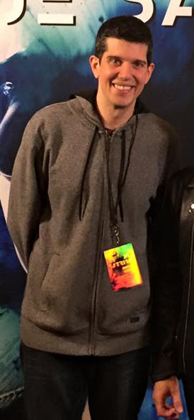

|

|
Welcome to my webpage!
My name is Ryan Phillips and I’m a student at Edmonds
Community College in the Computer Information Systems department. I currently am a part-time student outside of work in order to get my Web Applications Developer certification. My current position at work is Yield and Digital Operations Manager for ad ops in a large publication company in Western Washington. I’m taking this course because I’ve always wanted to get formal training on web development, as most of my experience and web coding knowledge has been from on-the-job training.
I have created a personal interests page for a lot of my own hobbies and such here on the site, but I will mention a few noteworthy things about me. I speak Japanese and have lived in Japan for over three years, I love electric guitars, game development and all forms of technology. I previously worked in the gaming industry in PR & Marketing, so I would absolutely love to leverage these new coding skills and pair them with my past experiences to get working back in the entertainment industry someday. Finally, in general, I love making things and have loved working on this site!
My site here is my final project for the CIS241 Web development course. I really enjoyed this course as I feel like I have a much more solid grasp of HTML5 and CSS fundamentals. I am excited to continue my learning journey at Edmonds Community College with Javascript and PHP courses in the upcoming semesters to widen my skillset. I hope you will take a spin around the site and definitely feel free to sign my guestbook as well. Any and all feedback is always welcome, so please, enjoy the site and let me know what you think!
- Ryan
|